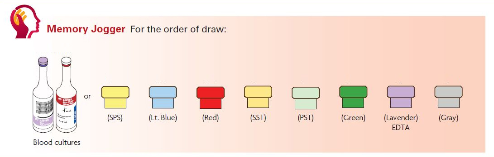
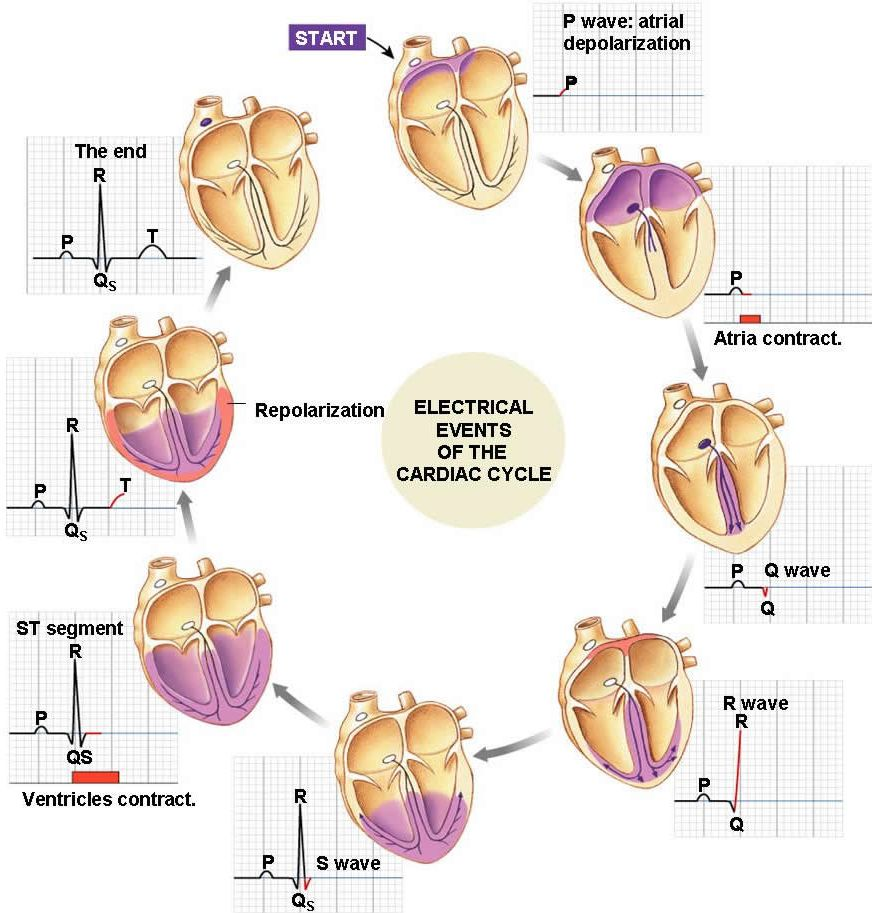
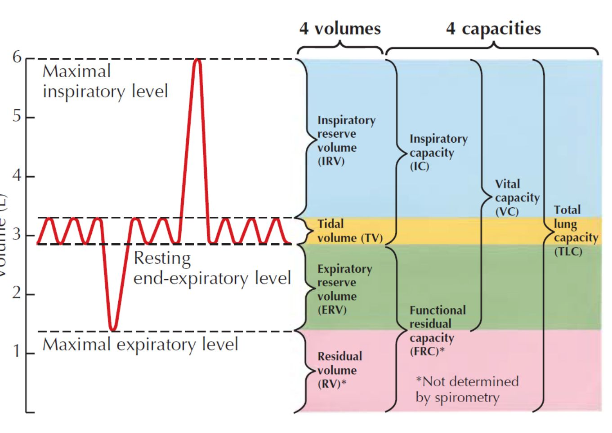
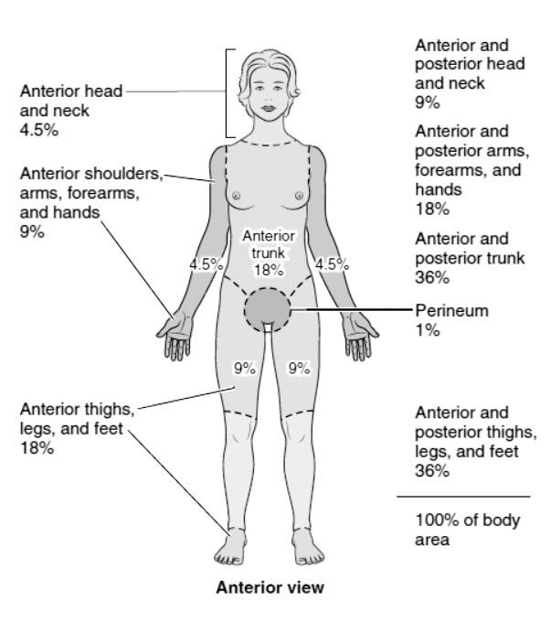

Vitals – Ranges → What abnormal means → What to do next
Age bands + adult anchors
Age bands used throughout
- Neonate: 0–28 days
- Infant: 1–12 months
- Toddler: 1–2 years
- Preschool: 3–5 years
- School-age: 6–11 years
- Adolescent: 12–16 years
- Adult: 16–60 years
- Older adult: >60 years
Adult “anchor normals” (clinic + exam)
- Heart rate (HR): 60–100 / min
- Respiratory rate (RR): 12–20 / min
- Temperature (oral): ~37 °C / 98.6 °F
- SpO₂: typically ≥ 95% in healthy adults (targets can vary with disease)
Temperature site differences (quick)
- Rectal: ~0.4–0.5 °C higher (~0.7–0.9 °F higher)
- Axillary: ~1 °C lower (~1.8 °F lower) and slower to equilibrate
- Tympanic/temporal: approximates core if technique is correct
1) Heart rate (HR)
Normal + definitions
- Normal HR: varies by age band; adolescents/adults usually 60–100 / min at rest.
- Tachycardia: HR above normal for age.
- Bradycardia: HR below normal for age.
When “fast” or “slow” can be normal (context matters)
- Physiologic tachycardia: exercise, fever, pain, anxiety, dehydration, standing up quickly, pregnancy, stimulants (including caffeine).
- Physiologic bradycardia: sleep, high fitness baseline (athletes), strong resting vagal tone, relaxation/meditation.
- Rule of thumb: if the patient looks well and vitals normalize with rest, it often reflects context; if symptoms/red flags are present, treat it as abnormal until proven otherwise.
Pulse sites (head → toe) + when to use each
- Temporal: temple; useful in infants/children when radial is hard to find.
- Carotid: neck; reliable in low perfusion (use one side at a time).
- Apical pulse: auscultate at 5th ICS midclavicular line; best when rhythm is irregular or peripheral pulses are weak.
- Brachial: medial upper arm/antecubital; common for infant pulse and for BP cuff placement landmarking.
- Radial: thumb side of wrist; most common routine adult pulse.
- Femoral: groin; strong central pulse (shock/low perfusion assessment).
- Popliteal: behind knee; useful when assessing leg circulation.
- Posterior tibial: behind medial malleolus; lower-extremity perfusion checks.
- Dorsalis pedis: dorsum of foot; distal perfusion checks (may be absent in some healthy people).
Tachycardia (above normal)
Common causes
- Pain, fever, anxiety
- Dehydration / hypovolemia
- Stimulants (caffeine, certain meds)
- Anemia
- Thyroid excess
Red flags
- Chest pain (angina): ischemic chest discomfort from reduced coronary blood flow.
- Shortness of breath
- Altered mental status (confusion, lethargy)
- Hypotension
- SpO₂ low (especially <92–94%)
- Palpitations that won’t stop
Do next (practical)
- Recheck after a short rest; verify technique.
- Position comfortably; cool/quiet room.
- Hydrate if appropriate (and not NPO).
- Check SpO₂; apply oxygen per protocol if hypoxic; escalate if red flags.
Bradycardia (below normal)
Common causes
- High fitness baseline
- Sleep (physiologic bradycardia)
- Vagal response (vomiting, pain)
- Medications (e.g., β-blockers)
- Hypoxia, hypothermia
Red flags
- Dizziness / syncope
- Altered mental status
- Hypotension
- Chest pain (angina): ischemic chest discomfort from reduced coronary blood flow.
- Very slow pulse
Do next (practical)
- Supine (lay flat) if symptomatic; warm if cold.
- Check BP + SpO₂; apply oxygen per protocol if hypoxic.
- Escalate if red flags present.
2) Respiratory rate (RR) + Work of Breathing (WOB)
Normal + definitions
- Normal RR: varies by age; adults usually 12–20 / min at rest.
- Tachypnea: RR above normal for age.
- Bradypnea: RR below normal for age.
When fast or slow breathing can be normal (context matters)
- Physiologic tachypnea: exercise, fever, anxiety/panic, pain, high altitude.
- Physiologic bradypnea: sleep (especially deep sleep), high fitness baseline at rest.
- Key idea: WOB (effort) and SpO₂ often matter more than the number alone.
Tachypnea (above normal)
Common causes
- Hypoxemia
- Acidosis: metabolic (↓HCO₃⁻) or respiratory (↑PaCO₂)
- Fever, pain/anxiety
- Asthma/COPD
- PE (pulmonary embolism)
Red flags
- SpO₂ < 92%
- Retractions, nasal flaring, cyanosis
- “Silent chest” (severe obstruction)
- Altered mental status
Do next (practical)
- Position upright; loosen tight clothing.
- Coach slow breathing if anxiety-driven.
- Suction if trained and policy allows (copious secretions).
- O₂ per device ladder/standing order; recheck in 2–3 minutes; escalate for red flags.
Bradypnea (below normal)
Common causes
- Opioids/sedatives
- Head injury
- Severe hypothyroid
- Hypothermia
Red flags
- Slow + shallow breathing
- Somnolence (hypercapnia = high CO₂)
- SpO₂ dropping
Do next (practical)
- Stimulate; reposition airway; apply O₂ per protocol.
- Escalate promptly if ventilation is inadequate.
WOB (Work of Breathing) visual triad
- Accessory muscle use: SCM/scalenes/intercostals firing = extra effort.
- Retractions: inward skin pull (intercostal, suprasternal, subcostal) from strong negative pressure.
- Nasal flaring: nares widen to reduce airway resistance (common in infants/children).
Pulmonary volumes + capacities (definitions + relationships)
- Tidal volume (TV): air moved in a normal quiet breath.
- Inspiratory reserve volume (IRV): extra air you can inhale after a normal inspiration.
- Expiratory reserve volume (ERV): extra air you can exhale after a normal expiration.
- Residual volume (RV): air left after maximal exhalation (prevents alveolar collapse).
- Inspiratory capacity (IC): maximal inhale after a normal exhale = TV + IRV.
- Functional residual capacity (FRC): air left after a normal exhale = ERV + RV.
- Vital capacity (VC): maximal exhale after maximal inhale = IRV + TV + ERV.
- Total lung capacity (TLC): total air in lungs after maximal inhale = VC + RV.
- Minute ventilation (V̇E): air moved per minute = RR × TV.
- Alveolar ventilation (V̇A): fresh air reaching gas exchange = RR × (TV − dead space).
- Capacity relationships (rebuild the chart):
- IC = TV + IRV
- FRC = ERV + RV
- VC = TV + IRV + ERV
- TLC = TV + IRV + ERV + RV
3) Blood pressure (BP)
Adult BP categories (numbers)
- Normal: systolic <120 and diastolic <80.
- Elevated: systolic 120–129 and diastolic <80.
- Hypertension (Stage 1): systolic 130–139 or diastolic 80–89.
- Hypertension (Stage 2): systolic ≥140 or diastolic ≥90.
- Hypertensive crisis: systolic ≥180 and/or diastolic ≥120.
- Reading rule: if systolic and diastolic fall in different categories, use the higher category.
Special patterns: white coat, masked (hidden), nocturnal hypertension
- White coat hypertension: clinic BP ≥140/90 with normal home/ambulatory readings (commonly daytime <135/85). Often due to conditioned anxiety in medical settings.
- Masked (hidden) hypertension: clinic BP <140/90 but elevated home/ambulatory BP (commonly daytime ≥135/85). Higher risk because it is missed without out‑of‑office readings.
- Nocturnal hypertension: abnormal nighttime BP pattern. Normally BP “dips” during sleep.
- Non‑dipping: nighttime fall <10% of daytime BP
- Rising: nighttime BP increases instead of falling
- Extreme dipping: nighttime fall >20% of daytime BP
Hypertension (above normal)
Common causes
- Pain/anxiety, caffeine/stimulants
- Renal/endocrine disease
- Chronic hypertension
Red flags
- Very high BP with chest pain (angina): ischemic chest discomfort from reduced coronary blood flow (can precede ACS/MI).
- Headache/neurologic deficit (possible stroke)
- Shortness of breath (possible pulmonary edema)
- Confusion, vision changes, or seizure with severe hypertension
Do next (practical)
- Repeat after 5–10 minutes rest using correct technique (correct cuff size, feet flat, arm at heart level).
- Remove stimulants (caffeine/nicotine) if recent; minimize talking.
- Report immediately if red flags or crisis range; otherwise document and follow office instructions.
Hypotension (below normal)
- Common adult threshold: systolic < 90 mmHg (context matters; baseline and symptoms are key).
- Why: dehydration, bleeding, medications, MI, arrhythmia, sepsis.
- Red flags: dizziness/weakness, altered mental status, cold/clammy skin, MAP < 65 (if available).
- Do next: lay supine, elevate legs if tolerated, check glucose per protocol, give O₂ if hypoxic, escalate per office/EMS.
4) Temperature
Sites (most accurate → least accurate in typical clinic use)
- Rectal: best “core” estimate; higher than oral by ~0.4–0.5 °C (0.7–0.9 °F).
- Tympanic: approximates core if technique is correct (aim at tympanic membrane).
- Oral: good standard if patient can close mouth and hasn’t had hot/cold liquids recently.
- Temporal: quick screening; technique-dependent.
- Axillary: slowest and often lowest; least accurate for decision-making.
Key definitions + cutoffs (numbers)
- Normothermia: ~36.5–37.5 °C (97.7–99.5 °F) depending on site/time of day.
- Pyrexia (fever): ≥ 38.0 °C (100.4 °F).
- Hyperpyrexia: ≥ 41.1 °C (≈106.0 °F) (dangerously high; treat as emergency).
- Hypothermia: < 35.0 °C (95.0 °F).
- Fever vs hyperthermia: fever = set-point reset; hyperthermia = failed heat loss (heat illness) without set-point reset.
Pyrexia (fever): what it suggests + what to do next
Common causes
- Infection/inflammation (most common)
- Medication reaction (less common; think timing + new meds)
- Heat illness if hot environment/exertion (more consistent with hyperthermia)
Red flags (escalate)
- Infant < 3 months with ≥ 38.0 °C (100.4 °F)
- Persistent very high temp (e.g., ≥ 40.5 °C / 104.9 °F) or toxic appearance
- Stiff neck, petechiae, altered mental status, seizure
- Immunocompromised, or signs of dehydration (poor intake, low urine output)
Do next (MA practical)
- Recheck with correct technique/site; document site used.
- Support: fluids if appropriate, light clothing, comfort measures.
- Antipyretic only if ordered/policy allows; avoid overdosing/duplication.
- Notify provider for red flags or if fever is persistent/worsening.
Hyperpyrexia: emergency-high temperature
- Definition: ≥ 41.1 °C (≈106 °F).
- Why it matters: risk of CNS dysfunction, seizures, dehydration, organ stress.
- Do next: initiate active cooling per protocol (remove excess clothing, cool environment, cool packs where appropriate), check vitals/mental status frequently, and escalate immediately (provider/EMS per setting).
Hypothermia: low temperature
Definition + common causes
- Definition: < 35.0 °C (95.0 °F).
- Why: exposure, sepsis, endocrine failure, medications/sedatives, intoxication.
Do next (MA practical)
- Confirm with appropriate site (rectal preferred for core) and correct technique.
- Warm: remove wet clothing, warm blankets, warm environment; avoid rapid aggressive external heat directly on skin.
- Monitor: check glucose per protocol; watch for altered mental status and arrhythmia risk in significant hypothermia.
- Escalate: notify provider; call EMS if severe, altered, or very low temperature.
5) Oxygen saturation (SpO₂) + oxygen devices (quick ladder)
SpO₂ targets + hypoxemia
- Typical target: ≥ 95% in healthy adults (may be lower targets in select conditions per orders).
- Hypoxemia: SpO₂ below target (low O₂ in arterial blood).
Common causes of low SpO₂
- V/Q mismatch (asthma, pneumonia)
- Hypoventilation (opioids)
- PE, shunt, low FiO₂
Do next (practical)
- Reposition airway; verify probe (warm finger, remove polish, minimize motion, try ear/forehead).
- Device fit: coach seal & fit; reassess in a few minutes after changes.
- Escalate if not improving or if red flags (AMS, severe WOB, persistent low SpO₂).
Oxygen devices (definitions + when)
Blow-by (infants/toddlers)
- Definition: Oxygen held near the face for mask-intolerant kids; low/variable FiO₂; temporary bridge.
- Use for: mild hypoxemia while positioning/suctioning.
Nasal cannula (NC)
- Adults: ~1–6 L/min (often start 1–2).
- Definition: comfortable low-to-moderate FiO₂ delivery.
Simple face mask
- Flow: 6–10 L/min (keep ≥ 6 to reduce CO₂ rebreathing).
- Use for: step-up when more FiO₂ is needed and ventilation is adequate.
NRB (non-rebreather)
- Flow: 10–15 L/min with reservoir bag inflated.
- Use for: moderate–severe hypoxemia while arranging next steps.
Venturi mask (adults)
- Definition: adapter delivers a fixed, precise FiO₂ (useful when exact titration is needed).
HFNC / CPAP / BiPAP / BVM (orientation)
- HFNC: high-flow heated humidified O₂; can add some PEEP; requires facility protocol/equipment.
- CPAP/BiPAP: non-invasive positive pressure; provider-directed; patient must protect airway.
- BVM: bag-valve-mask for inadequate ventilation; requires good seal and visible chest rise.
Fast ladder: position/coaching → blow-by (infants) → NC → simple mask → NRB or Venturi (precise) → HFNC (policy) → CPAP/BiPAP (provider) → BVM if ventilation inadequate.
Quick reference (combined)
ECG component quick reference (timing + amplitude)
- P wave:
- Duration: 0.08–0.10 s (about 2–2.5 boxes)
- Amplitude: < 2.5 mm (less than 2.5 boxes)
- PR interval:
- Duration: 0.12–0.20 s (about 3–5 boxes)
- Amplitude: not measured as a wave amplitude
- QRS complex:
- Duration: 0.06–0.10 s (about 1.5–2.5 boxes)
- Amplitude: about 5–30 mm (about 5–30 boxes)
- QT interval:
- Duration: usually less than about 0.44–0.46 s (up to about 11 boxes)
- Amplitude: not measured as a wave amplitude
- T wave:
- Duration: no single quick-reference duration value emphasized here
- Amplitude: less than 5 mm in limb leads; less than 10 mm in precordial leads
- ST segment:
- Duration: 0.08–0.12 s (about 2–3 boxes)
- Amplitude: normally isoelectric, usually within about 1–2 boxes of baseline
- U wave:
- Duration: often not used as a routine quick-reference number
- Amplitude: less than 1.5 mm (less than 1.5 boxes)
Tubes – Compact handles before the long guide
Fastest handle
One-line order + mission map
- Order string: Culture → Blue → Red/Gold → Green → Lavender → Gray.
- Culture: Blood cultures ask whether something alive is in the blood.
- Blue: Light blue is the coagulation tube.
- Red/Gold: These are the serum chemistry and serology tubes.
- Green: This is the rapid plasma chemistry tube.
- Lavender: This is the cells and hematology tube.
- Gray: This is the sugar-preservation tube for glucose, lactate, and ethanol workups.
The shortest memory hook
- Big picture: Solutes after clotting → Red/Gold; solutes without clotting → Green; clotting system itself → Blue; cells → Lavender; sugar preservation → Gray; microbes → Cultures.
- Fast phrase: Bugs → Clotting → Serum → Plasma chemistry → Cells → Sugar.
- Why this works: It groups tubes by lab mission first, so you do not have to memorize every single test as an isolated color fact.
Classification 1: by specimen type
Serum vs plasma vs whole blood vs culture specimen
- Serum tubes: Red and Gold/SST; blood is allowed to clot first, then the liquid portion tested is serum.
- Plasma tubes: Light blue, Green, and Gray; anticoagulants prevent clotting, so the liquid portion tested is plasma.
- Plasma vs whole blood: Plasma is the liquid portion of anticoagulated blood after cells are separated out; whole blood still contains the cells suspended in that liquid.
- Whole blood / cell tube: Lavender is best treated as the cell tube because many of its big uses depend on intact blood cells and whole-blood analysis rather than plasma alone.
- Culture specimen: Blood cultures live outside the serum/plasma split because their job is to grow or detect organisms.
- Why classification by specimen type is useful: It tells you what kind of specimen the lab actually wants before you worry about the individual test menu.
Quick examples by specimen type
- Serum examples: CMP, liver tests, lipids, thyroid tests, serologies, many hormone or antibody studies.
- Plasma examples: PT/INR and aPTT in blue, STAT chemistries in green, glucose and lactate preservation in gray.
- Whole blood examples: CBC, differential, smear, platelets, and HbA1c commonly live in lavender.
- Culture examples: Aerobic and anaerobic blood cultures are the classic first draw.
Classification 2: by additive
What the additive is doing
- No anticoagulant / clot first: Red and Gold/SST are the serum tubes; Gold adds clot activator plus separator gel.
- Citrate: Light blue preserves clotting factors for coagulation studies by binding calcium in a controlled ratio.
- Heparin: Green prevents clotting through thrombin inhibition and is the classic rapid chemistry tube.
- EDTA: Lavender chelates calcium strongly and preserves cellular detail for hematology.
- Fluoride / oxalate: Gray both prevents clotting and slows glycolysis so glucose does not get eaten by the cells.
- SPS: Blood culture bottles use SPS to support microbiology workflow rather than routine chemistry or hematology logic.
Why classification by additive is useful
- Carryover logic: Order of draw matters because additive contamination can distort downstream results.
- Chemistry logic: If you know what the additive does, the test families stop feeling random.
- Exam logic: Questions often hide the answer in the additive rather than in the cap color.
Classification 3: by test family
What kind of problem lives in what tube
- Microbiology: Blood cultures live here because the question is whether an organism is present in the bloodstream.
- Coagulation: Blue owns PT/INR, aPTT, fibrinogen, D-dimer, and factor workups.
- Serum chemistry / serology: Red and Gold own routine chemistry, immunology, hormones, antibodies, and many drug levels.
- Rapid plasma chemistry: Green is the fast chemistry lane when you do not want to wait for clotting.
- Hematology / cells: Lavender owns CBC, differential, smear logic, and other cell-centered studies.
- Sugar preservation: Gray owns glucose, lactate, and ethanol because metabolism must be slowed after the draw.
Compact exam mapping
- PT / INR / aPTT / D-dimer: Think Blue.
- CBC / Hgb / Hct / platelets / differential / HbA1c: Think Lavender.
- BMP / CMP / AST / ALT / cholesterol / TSH / antibodies: Think Red or Gold.
- STAT electrolytes / some troponins / ammonia: Think Green.
- Glucose / lactate / ethanol: Think Gray.
- Blood cultures: Think culture bottles first.
Tri-Zone compression framework

Zone 1: The “Pure” Start (Sterile & Citrate)
- Logic: These go first because they are the most sensitive to contamination from later additives.
- The Guard: Blood Cultures and Light Blue.
- Encoding Key: Preserve the state. Cultures preserve the bacterial state; Blue preserves the natural clotting time.
- Why first: Both are vulnerable to additive carryover from later tubes.
Zone 2: The “Natural” Middle (The Serum Block)
- Logic: These are the only routine tubes where we deliberately allow the blood to clot.
- The Guard: Red and Gold/SST.
- Encoding Key: The Clotting Gap.
- Recall Trick: If it has a “S” — Serum, SST — it lives in the middle block.
Zone 3: The “Locked” End (The Electrolyte & Metabolic Block)
- Logic: These use increasingly directive chemistry to lock, preserve, or channel what the lab wants to measure.
- The Guard: Green, Lavender, and Gray.
- The Chelation Ladder: Green = the soft lock; Lavender = the hard lock; Gray = the final lock.
- Encoding Key: Increasing interference — from anticoagulation, to strong calcium capture, to anticoagulation plus glycolysis suppression.
Compact comparison grid
Tube | additive / specimen | what lives there
| Tube | Additive / specimen | What lives there |
|---|---|---|
| Blood cultures | SPS / culture specimen | Microbiology, bloodstream infection workups |
| Light blue | Sodium citrate / plasma | Coagulation: PT/INR, aPTT, fibrinogen, D-dimer |
| Red | Clot first / serum | Serum chemistry, serology, hormones, antibodies, drug levels |
| Gold / SST | Clot activator + gel / serum | Routine serum chemistry, many chemistry and serology panels |
| Green | Heparin / plasma | Rapid plasma chemistry, often STAT |
| Lavender | EDTA / whole blood | Hematology and cell-based testing |
| Gray | Fluoride + oxalate / plasma | Glucose, lactate, ethanol, glycolysis-sensitive studies |
Skeletal System – Adult Bone Types + Bone Pathology
Adult skeleton reorganized by bone type (the “206-by-shape” map)
1) Long bones (90 total)
Upper limb + girdle
- Clavicle (2)
- Humerus (2)
- Radius (2)
- Ulna (2)
- Metacarpals I–V (10 total)
- Hand phalanges (28 total)
- Proximal (10)
- Middle (8)
- Distal (10)
Lower limb
- Femur (2)
- Tibia (2)
- Fibula (2)
- Metatarsals I–V (10 total)
- Foot phalanges (28 total)
- Proximal (10)
- Middle (8)
- Distal (10)
Learning hook: long bones = leverage + locomotion + big marrow spaces.
2) Short bones (28 total)
Carpals (14 total, excluding pisiform—see sesamoid)
- Scaphoid (2)
- Lunate (2)
- Triquetrum (2)
- Trapezium (2)
- Trapezoid (2)
- Capitate (2)
- Hamate (2)
Tarsals (14 total)
- Calcaneus (2)
- Talus (2)
- Navicular (2)
- Cuboid (2)
- Medial cuneiform (2)
- Intermediate cuneiform (2)
- Lateral cuneiform (2)
Learning hook: short bones = stability + shock distribution + controlled glide.
3) Flat bones (38 total)
Thorax
- Ribs (24) (12 pairs)
- Sternum (1)
Shoulder
- Scapulae (2)
Skull (plate-like protection bones)
- Frontal (1)
- Parietal (2)
- Occipital (1)
- Temporal (2)
- Nasal (2)
- Lacrimal (2)
- Vomer (1)
Learning hook: flat bones = protection + broad muscle attachment + marrow “real estate.”
4) Irregular bones (46 total)
Vertebral column
- C1–C7 (7)
- T1–T12 (12)
- L1–L5 (5)
- Sacrum (5 Fused)
- Coccyx (4 Fused)
Pelvis
- Hip bones / os coxae (2) fused compound bones
Skull (complex base + face shapes)
- Sphenoid (1)
- Ethmoid (1)
- Maxillae (2)
- Mandible (1)
- Zygomatic (2)
- Palatine (2)
- Inferior nasal conchae (2)
Other
- Hyoid (1)
Auditory ossicles (middle ear)
- Malleus (2)
- Incus (2)
- Stapes (2)
Learning hook: irregular bones = “custom parts” (spine, skull base, face, pelvis).
5) Sesamoid bones
Standard sesamoids included in the classic 206 count (4 total)
- Patellae (2)
- Pisiform (2) embedded in tendon
Common accessory sesamoids (often present; not always counted)
- Hallux sesamoids (typically 2 under the 1st metatarsal head)
- Thumb sesamoids (often near the MCP region)
Learning hook: sesamoids = tendon “pulley stones” → improve leverage, reduce friction.
6) Sutural (wormian) bones variable/accessory
- Small extra bones that can occur within cranial sutures (number/location vary)
Bone pathology (Definitions with micro → macro logic)
Tip: click the condition name to hide/reveal the definition (quick recall drills).
A) Remodeling / density problems (chronic “renovation imbalance”)
- Osteopenia: Lower-than-normal bone mineral density (BMD) that isn’t severe enough to be osteoporosis; reflects net remodeling deficit (resorption > formation) and increases fracture risk over time.
- Osteoporosis: Decreased bone mass + weaker micro-architecture (thin trabeculae, porous cortex) from chronic resorption outpacing formation, leading to fragility fractures (hip, vertebrae, wrist are common).
- Paget disease of bone (osteitis deformans): Disordered high-turnover remodeling—bone is broken down and rebuilt too fast, producing structurally abnormal, enlarged, weaker bone (pain, deformity, fracture risk).
B) Mineralization problems (the “soft bone” family)
- Osteomalacia (adults): Poor mineralization of osteoid → bones become softer, causing bone pain and increased fracture risk (often linked to vitamin D/calcium/phosphate problems).
- Rickets (children): Pediatric osteomalacia affecting growing bones/growth plates, leading to impaired endochondral mineralization and skeletal deformities.
C) Blood supply failure (acute or chronic “no fuel, no bone”)
- Osteonecrosis / Avascular necrosis (AVN): Bone tissue death from reduced blood flow → structural collapse risk (commonly femoral head). Micro: osteocytes die; macro: subchondral bone weakens and can collapse.
- Bone infarct: Ischemic necrosis within bone (same concept; location emphasis).
D) Infection/inflammation (bone as a battleground)
- Osteomyelitis: Infection of bone causing inflammatory destruction—swelling/pressure can reduce blood flow, and inflammatory signaling ramps osteoclast activity → bone breakdown; possible abscess/sequestrum (clinically: pain; fever may/may not be present; inflammatory markers often elevated).
E) Mechanical failure (acute injury patterns)
- Fracture: Break in bone continuity when load exceeds bone strength (strength depends on mineralization + density + micro-architecture + direction of force).
Fracture patterns (click to expand)
- Open (compound): Communicates with outside → higher infection risk.
- Closed (simple): Skin intact.
- Comminuted: Multiple fragments (often high-energy trauma; harder stabilization).
- Spiral: Twisting force.
- Transverse / Oblique: Straight-across / angled break from bending/compression.
- Compression: Vertebral bodies commonly (often fragility-related).
- Impacted: Ends driven into each other.
- Greenstick (kids): Incomplete bend/break (bone more flexible).
- Stress fracture: Microfractures from repetitive loading > repair capacity (common tibia/metatarsals).
- Pathologic fracture: Minimal trauma due to underlying weakness (osteoporosis, tumor, infection, etc.).
Micro → macro idea: repeated microcracks + inadequate repair = stress fracture; low density/poor architecture = fragility fracture; altered matrix = pathologic fracture.
F) Genetic/primary structural defects (built wrong from the start)
- Osteogenesis imperfecta: Inherited disorder (classically collagen-related) leading to brittle bone—matrix is structurally weak, so fractures occur with low trauma.
G) Tumor/Marrow-driven bone destruction
- Osteosarcoma: Malignant bone-forming tumor; causes local bone destruction and pain, may present with swelling/mass.
- Multiple myeloma (bone involvement): Marrow plasma cell cancer causing lytic bone lesions via signaling that increases osteoclast activity → bone pain, fractures.
- Bone metastasis: Cancer spread to bone causing weakening (lytic) or abnormal hardening (blastic) depending on tumor type; increases fracture risk and pain.
Muscular System – Regional Map + Pathology
Skeletal muscle map (region → compartment → action)
This is a motion-first view (useful for exams). Click any motion label to hide/reveal the prime movers.
Neck / Head
- Neck flexion: Bring chin to rest on chest.
- Sternocleidomastoid, Anterior scalene, Longus capitis, Longus colli.
- Neck extension: Return head to erect position.
- Superior trapezius, Splenius capitis/cervicis, Semispinalis capitis/cervicis, Longissimus capitis/cervicis, Interspinales cervicis.
- Neck lateral flexion: Tilt head as far as possible toward each shoulder.
- Scalenes, Sternocleidomastoid (ipsilateral), Splenius, Longissimus, Levator scapulae (assist).
- Neck rotation: Turn head left/right as far as possible.
- Sternocleidomastoid (contralateral), Splenius (ipsilateral), Multifidus/rotatores (segmental).
Shoulder (glenohumeral)
- Flexion: Raise arm from side position forward to position above head.
- Anterior deltoid, Pectoralis major (clavicular), Biceps brachii, Coracobrachialis.
- Extension: Return arm to position at side of body.
- Posterior deltoid, Latissimus dorsi, Teres major, Triceps brachii (long head).
- Abduction: Raise arm from side to position above head with palm away from head.
- Deltoid, Supraspinatus.
- Adduction: Lower arm sideways and across body as far as possible.
- Latissimus dorsi, Teres major, Pectoralis major, Coracobrachialis, Triceps (long head).
- Medial rotation: With elbow flexed, rotate arm so the thumb turns inward and toward the back.
- Subscapularis, Pectoralis major, Latissimus dorsi, Teres major, Anterior deltoid.
- Lateral rotation: With elbow flexed, rotate arm so the thumb turns upward and even with the head.
- Infraspinatus, Teres minor, Posterior deltoid.
Elbow / Forearm / Wrist
- Elbow flexion: Bend elbow so lower arm moves toward shoulder and hand is level with shoulder.
- Biceps brachii, Brachialis, Brachioradialis.
- Elbow extension: Straighten elbow by lowering hand.
- Triceps brachii, Anconeus.
- Supination: Turn lower arm and hand so palm is up.
- Supinator, Biceps brachii.
- Pronation: Turn lower arm so palm is down.
- Pronator teres, Pronator quadratus.
- Wrist flexion: Move palm toward inner aspect of forearm.
- Flexor carpi radialis, Flexor carpi ulnaris, Palmaris longus, Flexor digitorum superficialis (assist).
- Wrist extension: Move fingers so fingers, hands, and forearm are in same plane.
- Extensor carpi radialis longus/brevis, Extensor carpi ulnaris.
- Wrist abduction (radial deviation): Bend wrist toward thumb.
- Flexor carpi radialis, Extensor carpi radialis longus/brevis, APL/EPB (thumb contributors).
- Wrist adduction (ulnar deviation): Bend wrist toward fifth finger.
- Flexor carpi ulnaris, Extensor carpi ulnaris.
Spine / Trunk
- Spine flexion: Bend trunk forward.
- Rectus abdominis, Internal/external obliques.
- Spine extension: Return trunk toward upright / arch backward.
- Erector spinae (iliocostalis/longissimus/spinalis), Multifidus, Semispinalis, Rotatores, Interspinales.
- Spine lateral flexion: Side-bend trunk toward each side.
- Quadratus lumborum, Iliocostalis/longissimus, Internal/external obliques.
- Spine rotation: Twist trunk left/right.
- Internal/external obliques (coupled), Multifidus/rotatores (segmental control).
Hip / Knee / Ankle
- Hip flexion: Move leg forward and up.
- Iliopsoas, Rectus femoris, Sartorius, Tensor fasciae latae, Iliacus.
- Hip extension: Move leg back beside other leg.
- Gluteus maximus, Hamstrings (long head biceps femoris, Semitendinosus, Semimembranosus), Adductor magnus (posterior fibers).
- Hip abduction: Move leg away from body.
- Gluteus medius/minimus, Tensor fasciae latae.
- Hip adduction: Move leg back toward other leg (across midline if possible).
- Adductor longus/brevis/magnus, Gracilis, Pectineus.
- Hip medial rotation: Turn foot and leg toward other leg.
- Anterior fibers of gluteus medius/minimus, Tensor fasciae latae.
- Hip lateral rotation: Turn foot and leg away from other leg.
- Gluteus maximus, Piriformis, Obturators, Gemelli, Quadratus femoris, Sartorius (assist).
- Knee flexion: Bring heel back toward back of thigh.
- Hamstrings, Gastrocnemius, Sartorius, Gracilis, Popliteus.
- Knee extension: Straighten knee to return leg to the floor/standing.
- Quadriceps (rectus femoris + vasti).
- Knee medial rotation: With knee flexed, rotate tibia so foot turns inward (relative to femur).
- Semitendinosus, Semimembranosus, Gracilis, Sartorius, Popliteus.
- Knee lateral rotation: With knee flexed, rotate tibia so foot turns outward (relative to femur).
- Biceps femoris.
- Dorsiflexion: Move foot so that toes are pointed upward.
- Tibialis anterior, Extensor hallucis longus, Extensor digitorum longus.
- Plantarflexion: Move foot so that toes are pointed downward.
- Gastrocnemius, Soleus, Tibialis posterior, Flexor hallucis longus, Flexor digitorum longus, Plantaris.
- Inversion: Turn sole of foot toward the body.
- Tibialis anterior, Tibialis posterior.
- Eversion: Turn sole of foot away from the body.
- Fibularis (peroneus) longus/brevis, Extensor digitorum longus (assist).
Muscular pathology (definitions with micro → macro logic)
Tip: click any bolded condition name to hide/reveal the definition. Study mode hides all definitions until you “earn” them.
A) Tendinopathy / tendinitis / tenosynovitis (load → microdamage → pain)
- Tendinopathy: Umbrella term for painful tendon dysfunction. Mechanism: repetitive load → microtears + collagen disorganization; may be inflammatory early (“tendinitis”) and more degenerative with chronicity (“tendinosis”).
- Tendinitis: More acute inflammatory tendon pain (often after a sudden spike in load). Mechanism: inflammatory mediators sensitize nociceptors → pain with use; swelling may appear.
- Tendinosis: Chronic degenerative tendon change (less classic inflammation, more collagen chaos). Mechanism: failed healing → weaker tensile properties → pain + higher rupture risk under load.
- Tenosynovitis: Inflammation of a tendon sheath (common in hands/wrists). Mechanism: friction inside a tight sheath → swelling → “sticking” motion and pain.
- Enthesopathy: Pain/degeneration at the tendon-to-bone insertion (enthesis). Mechanism: high stress concentration at insertion → microfailure + inflammatory signaling.
Major joint patterns (medial vs lateral differentiation)
Elbow
- Lateral epicondylitis (tennis elbow): Lateral elbow pain from extensor origin tendinopathy (classically ECRB). Mechanism: wrist extension/grip overload → microtears at lateral epicondyle.
- Medial epicondylitis (golfer’s elbow): Medial elbow pain from flexor-pronator origin tendinopathy. Mechanism: wrist flexion/pronation overload → microtears at medial epicondyle.
Knee
- Pes anserine tendinopathy: Medial knee pain at sartorius/gracilis/semitendinosus insertion. Mechanism: valgus/overuse + friction at anteromedial tibia insertion.
- Iliotibial (IT) band friction syndrome: Lateral knee pain from repetitive rubbing over lateral femoral epicondyle. Mechanism: repetitive flex/extend (running/cycling) → friction + local inflammation.
- Patellar tendinopathy (jumper’s knee): Anterior knee pain at patellar tendon (often inferior pole of patella). Mechanism: high eccentric quad load → microdamage in tendon.
Ankle / Foot
- Posterior tibial tendinopathy: Medial ankle/arch pain; may progress to acquired flatfoot. Mechanism: tendon overload → loss of dynamic arch support.
- Peroneal (fibularis) tendinopathy: Lateral ankle pain; often with instability. Mechanism: eversion stabilizers overloaded (especially after ankle sprains).
- Achilles tendinopathy: Posterior heel pain; thickened tendon common. Mechanism: repetitive plantarflexion load → microdamage; risk of rupture with degeneration.
Hip
- Gluteus medius/minimus tendinopathy: Lateral hip pain (greater trochanteric pain region). Mechanism: abductor overload → tendon microdamage near trochanter.
- Adductor tendinopathy: Medial groin pain with adduction. Mechanism: high adductor load (cutting/sprinting) → microtears near pubic insertion.
Wrist / Hand
- De Quervain tenosynovitis: Radial (thumb-side) wrist pain from APL/EPB sheath inflammation. Mechanism: repetitive thumb abduction/extension → sheath swelling → friction.
- ECU tendinopathy/tenosynovitis: Ulnar-side wrist pain from extensor carpi ulnaris overload. Mechanism: repetitive ulnar deviation/supination-pronation stresses the tendon in its groove.
- Trigger finger (stenosing tenosynovitis): Finger “catches/locks” as tendon thickens or A1 pulley tightens. Mechanism: tendon-pulley mismatch → snapping motion.
B) Bursitis (friction sacs inflamed)
- Subacromial bursitis: Shoulder pain with abduction; often co-travels with rotator cuff tendinopathy. Mechanism: impingement + repetitive overhead motion → bursal inflammation.
- Olecranon bursitis: Posterior elbow swelling (“student’s elbow”). Mechanism: repeated pressure/trauma → fluid + inflammation.
- Prepatellar bursitis: Anterior knee swelling (“housemaid’s knee”). Mechanism: kneeling pressure → bursal inflammation.
- Trochanteric bursitis: Lateral hip pain; often part of greater trochanteric pain syndrome. Mechanism: friction/overuse at lateral hip structures.
C) Muscle injury (strain → tear → scar)
- Muscle strain: Overstretch/overload injury at muscle or myotendinous junction. Mechanism: microfiber disruption → inflammation → pain + weakness.
- Partial tear: More structural fiber disruption; pain + functional deficit. Mechanism: bigger discontinuity → longer healing time + scar risk.
- Complete rupture: Full-thickness failure (often tendon). Mechanism: compromised collagen + high load → sudden loss of function.
- DOMS (delayed onset muscle soreness): Soreness 24–72h after unusual/eccentric work. Mechanism: microdamage + inflammatory signaling + sensitization (not lactic acid).
D) Compartment syndromes (pressure → ischemia)
- Acute compartment syndrome: Rising compartment pressure compromises perfusion → ischemia → necrosis. Mechanism: swelling/bleeding in a closed fascial box; emergency to prevent permanent damage.
- Chronic exertional compartment syndrome: Exercise-induced pressure rise causing recurrent pain/tightness that resolves with rest. Mechanism: reversible perfusion limitation during activity.
E) Inflammatory myopathies (immune attack on muscle)
- Polymyositis: Immune-mediated proximal muscle weakness. Mechanism: inflammatory cell attack on muscle fibers → weakness more than pain.
- Dermatomyositis: Proximal weakness + characteristic skin findings. Mechanism: immune-mediated microvascular injury affecting muscle/skin.
- Inclusion body myositis: Slowly progressive weakness (often older adults), frequently treatment-resistant. Mechanism: mixed inflammatory + degenerative protein-aggregate pathology.
F) Necrosis/toxicity (muscle breakdown)
- Rhabdomyolysis: Skeletal muscle breakdown releasing myoglobin/CK into blood. Mechanism: membrane failure → myoglobin load can injure kidneys; triggers include crush injury, extreme exertion, heat, certain meds/toxins.
G) Neuromuscular transmission disorders (wires + receptors fail → weakness)
- Myasthenia gravis: Autoantibodies reduce functional ACh receptors at NMJ → fatigable weakness. Mechanism: fewer receptors → smaller end-plate potentials → failure with repeated use.
- Lambert–Eaton syndrome: Autoantibodies target presynaptic voltage-gated Ca²⁺ channels → reduced ACh release. Mechanism: less vesicle fusion → weakness that may improve with repeated activity (facilitation).
- Botulism: Toxin blocks ACh release → flaccid paralysis. Mechanism: SNARE cleavage prevents vesicle fusion.
- Tetanus: Toxin blocks inhibitory neurotransmitter release (GABA/glycine) → spastic paralysis. Mechanism: disinhibition of motor neurons.
H) Fascia disorders (wrapping tissue fails: friction, fibrosis, infection)
- Plantar fasciitis: Heel pain (often worst with first steps) from microdamage at the plantar fascia’s calcaneal attachment. Mechanism: repetitive tensile load → microtears + degenerative change; “-itis” is historical and may be less purely inflammatory chronically.
- Myofascial pain syndrome: Regional pain driven by “trigger points” in taut muscle bands plus irritated fascia. Mechanism: local metabolic stress + sensitized nociceptors → referred pain patterns; perpetuated by overuse/posture/sleep stress.
- Dupuytren contracture (palmar fascial fibromatosis): Progressive thickening of palmar fascia → cords → flexion contractures (classically ring/small finger). Mechanism: fibroblast/myofibroblast overactivity → collagen deposition + tissue shortening.
- Eosinophilic fasciitis: Painful swelling + thickened fascia (often forearms/legs). Mechanism: inflammatory infiltration + fibrosis of fascia → stiffness and “tight skin” sensation.
- Necrotizing fasciitis: Rapid, life-threatening infection tracking along fascial planes. Mechanism: bacterial toxins + ischemia in fascia → fast tissue death; hallmark is pain out of proportion and systemic toxicity; requires urgent surgery + antibiotics.
I) Ligament pathology (joint stability fails: laxity → subluxation)
Ligaments are dense regular connective tissue connecting bone-to-bone; they’re classically cataloged with the skeletal system, but are biomechanically inseparable from muscle tendons. Ligaments set the “rules of motion” that muscles act within.
- Ligament sprain: Overstretch/partial tearing of ligament fibers. Mechanism: collagen fiber disruption → hemorrhage + inflammatory mediators → pain, swelling, instability.
- Complete ligament tear/rupture: Full-thickness failure → mechanical instability. Mechanism: tensile overload (often with twisting) exceeds collagen strength; may need surgical reconstruction depending on structure/instability.
- ACL tear: Knee instability after pivot/noncontact deceleration injury. Mechanism: anterior tibial translation + rotation overwhelms ACL; “pop” + swelling can occur.
- MCL sprain: Medial knee pain after valgus stress. Mechanism: medial collateral fibers strained by force driving knee inward.
- LCL sprain: Lateral knee pain after varus stress. Mechanism: lateral collateral fibers strained by force driving knee outward.
- Syndesmotic injury (high ankle sprain): Pain above ankle mortise, worse with external rotation/dorsiflexion. Mechanism: tearing of distal tibiofibular ligaments → widened mortise + prolonged recovery.
- UCL injury (thumb MCP; “skier’s thumb”): Loss of pinch stability after forced abduction. Mechanism: UCL tear → valgus laxity at thumb MCP.
- UCL injury (elbow; “thrower’s”): Medial elbow pain/instability with pitching. Mechanism: repeated valgus torque → microfailure/tear; may require reconstruction (“Tommy John”).
- Ligamentous laxity / hypermobility: Excess joint motion due to collagen quality or neuromuscular control. Mechanism: lower passive restraint → higher demand on muscles and proprioception; injury risk rises if control is poor. Subluxation = a partial dislocation: the joint surfaces lose normal alignment/contact without complete separation.
Heart – Mediastinum → Layers → Valves → Conduction
Mediastinum (definition + boundaries)
Mediastinum
- Definition: Central compartment of the thoracic cavity between the right and left pleural sacs.
Boundaries (whole mediastinum)
- Anterior boundary: Sternum + costal cartilages.
- Posterior boundary: Thoracic vertebral bodies.
- Lateral boundary: Mediastinal pleura (the medial pleural surfaces).
- Inferior boundary: Diaphragm.
- Superior boundary: Superior thoracic aperture (thoracic inlet).
Great vessels (afferent vs efferent)
Blood flow organization
Afferent = flowing into the heart. Efferent = flowing out of the heart.
Afferent (to the heart)
- Superior vena cava (SVC): Returns deoxygenated blood from the upper body to the right atrium.
- Inferior vena cava (IVC): Returns deoxygenated blood from the lower body to the right atrium.
- Pulmonary veins: Return oxygenated blood from the lungs to the left atrium.
Efferent (from the heart)
- Pulmonary trunk → pulmonary arteries: Carry deoxygenated blood from the right ventricle to the lungs.
- Aorta: Carries oxygenated blood from the left ventricle to the systemic circulation.
Pericardium (layers: superficial → deep)
Pericardium overview
- Pericardium: A protective sac around the heart that anchors it in the mediastinum and provides a low-friction surface for beating.
Layers (superficial → deep)
- Fibrous pericardium: Tough outer layer of dense connective tissue. It is firmly anchored to the central tendon of the diaphragm, attached anteriorly to the sternum (sternopericardial connections), and continuous superiorly with the connective tissue (adventitia) of the great vessels—anchoring the heart in place and limiting sudden expansion.
- Parietal serous pericardium: Thin, smooth serous membrane that lines the inner surface of the fibrous pericardium (it is the “sac lining” of the serous pericardium).
- Pericardial cavity: Potential space between the parietal and visceral serous layers containing a thin film of serous fluid; acts as a lubrication layer so the heart can beat with minimal friction against the sac.
- Visceral serous pericardium (epicardium): Serous membrane tightly adherent to the heart surface; it is the “heart surface” layer of the serous pericardium and is also the outermost layer of the heart wall.
Mechanic idea: fibrous = anchor/limit; serous = slippery; cavity = fluid glide-plane.
Common confusion breaker: pericardium vs heart wall
- Epicardium: Same thing as visceral serous pericardium (outer heart surface).
- Myocardium: Thick cardiac muscle layer that generates force.
- Endocardium: Inner lining of chambers/valves (continuous with vascular endothelium).
One phrase that helps: Serous pericardium folds (parietal ↔ visceral) with a small fluid space between them.
Myocardium (right pump vs left pump)
Right pump (pulmonary circuit)
- Right atrium (RA): Receiving chamber for systemic venous blood (from SVC/IVC).
- Right ventricle (RV): Sending chamber to the pulmonary trunk; RV wall is thinner than the LV (built for lower-pressure output).
Left pump (systemic circuit)
- Left atrium (LA): Receiving chamber for oxygenated blood (from pulmonary veins).
- Left ventricle (LV): Sending chamber to the aorta; LV wall is thicker than the RV (built for higher-pressure output).
Endocardium + valves (AV vs semilunar)
Endocardium
- Endocardium: Endothelial inner lining of the heart chambers and valves; smooth non-stick lining continuous with blood vessel endothelium.
Valves (purpose + organization)
- Valve purpose: Ensure one-way blood flow by preventing backflow when pressure gradients reverse.
Atrioventricular (AV) valves (atrium → ventricle)
- Tricuspid valve: Right atrium → right ventricle.
- Mitral (bicuspid) valve: Left atrium → left ventricle.
- Chordae tendineae: Fibrous cords connecting valve leaflets to papillary muscles; prevent leaflet prolapse into atria during ventricular contraction.
- Papillary muscles: Ventricular muscles that tense chordae during systole to stabilize AV valves and reduce regurgitation risk.
Semilunar (SL) valves (ventricle → artery)
- Pulmonic valve: Right ventricle → pulmonary trunk.
- Aortic valve: Left ventricle → aorta.
- How they close: When ventricular pressure falls below arterial pressure, blood briefly flows backward toward the ventricle and fills the cusps, snapping the valve shut.
Electrical conduction (pathway + ECG mapping)
Electrical events of the cardiac cycle (visual anchor)

Diagram: P wave (atrial depolarization), QRS complex (ventricular depolarization), ST segment (uniform depolarization), T wave (ventricular repolarization).
Conduction pathway (structures + jobs)
- Sinoatrial (SA) node: Primary pacemaker in the right atrium near the SVC; initiates atrial depolarization.
- Bachmann’s bundle: Preferential pathway carrying impulses from the right atrium to the left atrium, coordinating atrial activation.
- Internodal pathways: Conduction routes within the right atrium that carry impulses toward the AV node.
- Atrioventricular (AV) node: The gate between atria and ventricles; slows conduction and filters impulses before they reach the ventricles.
- Bundle of His (AV bundle): Electrical bridge through the fibrous skeleton into the interventricular septum.
- Right and left bundle branches: Rapid pathways down the interventricular septum toward the apex.
- Purkinje fibers: Fast subendocardial network that spreads depolarization across ventricular myocardium for coordinated contraction.
AV node as “Equalizer” and “Resistor” (two different jobs)
- Equalizer (timing): Delays atrial-to-ventricular conduction (~0.1 s) so atria can finish emptying into ventricles before ventricular contraction begins.
- Resistor (filter): Limits how many atrial impulses reach the ventricles at very fast atrial rates (long refractory period + decremental conduction → some impulses are blocked).
- Key exam nuance: An isoelectric segment on the ECG can coincide with strong mechanical contraction (flat electrical line ≠ mechanical silence).
Quick reference (ECG timing + electrical location + mechanical meaning)
- P wave:
- Duration: 0.08–0.10 s (2–2.5 boxes)
- Amplitude: <2.5 mm (<2.5 boxes)
- Electrical location: atrial myocardium is depolarizing
- Mechanical consequence: atrial systole follows shortly
- PR interval:
- Duration: 0.12–0.20 s (3–5 boxes)
- Amplitude: no wave amplitude value
- Electrical location: AV node delay into His entry
- Mechanical consequence: ventricular filling time is protected so atria finish emptying before ventricles contract
- QRS complex:
- Duration: 0.06–0.10 s (1.5–2.5 boxes)
- Amplitude: about 5–30 mm (5–30 boxes)
- Electrical location: interventricular septum plus ventricular myocardium are depolarizing
- Mechanical consequence: ventricular systole begins and ramps up
- QT interval:
- Duration: usually <0.44–0.46 s (up to about 11 boxes)
- Amplitude: no wave amplitude value
- Electrical location: ventricles from start of depolarization to end of repolarization
- Mechanical consequence: total ventricular electrical systole time
- T wave:
- Duration: no standard duration value used here
- Amplitude: <5 mm in limb leads and <10 mm in precordial leads
- Electrical location: ventricular myocardium is repolarizing
- Mechanical consequence: relaxation begins and diastole is being set up
- ST segment:
- Duration: 0.08–0.12 s (2–3 boxes)
- Amplitude: normally isoelectric (<1–2 boxes off baseline)
- Electrical location: ventricles are uniformly depolarized
- Mechanical consequence: peak contraction/ejection can be occurring even though the ECG line looks flat
- U wave:
- Duration: often not visible
- Amplitude: <1.5 mm (<1.5 boxes)
- Electrical location: thought to reflect late repolarization; exact source can vary
- Mechanical consequence: usually no clear mechanical event, but a prominent U wave is a clue to look closer clinically
Blood – Composition → Formed elements → Typing
1) Blood at a glance (major fractions + plasma composition)
Whole blood after centrifugation
- Plasma: Top layer, about 55% of blood volume; the liquid transport medium.
- Buffy coat: Thin middle layer, <1%; made of white blood cells and platelets.
- Red blood cells (RBCs): Bottom layer, about 45%; the major formed element by volume.
- Hematocrit: The percentage of total blood volume occupied by RBCs.
Plasma composition
- Water: About 92%; solvent, heat carrier, and volume base.
- Plasma proteins: About 7%; transport, osmotic balance, clotting, and regulation.
- Other solutes: About 1%; electrolytes, nutrients, wastes, and other dissolved molecules.
Plasma proteins (what they do)
- Albumins: About 60% of plasma proteins; transport lipids and steroid hormones and are the major contributor to plasma oncotic pressure.
- Globulins: About 35%; transport ions, hormones, and lipids; many also serve immune functions.
- Fibrinogen: About 4%; essential precursor for fibrin formation in the clotting cascade.
- Regulatory proteins: <1%; include enzymes, hormones, and signaling proteins.
Other solutes
- Electrolytes: Na+, K+, Ca2+, Cl−, HCO3−; essential for membrane potentials, fluid balance, and acid–base control.
- Organic nutrients: Glucose, amino acids, and fatty acids used for ATP production, growth, and maintenance.
- Organic wastes: Urea, bilirubin, creatinine, and others carried toward organs of excretion.
2) Formed elements (origin → lifespan → disposal)
Origin: hematopoiesis + active red bone marrow sites
- Hematopoiesis: the process of producing the formed elements of blood from hematopoietic stem cells.
- Main origin: red bone marrow.
- Major active adult red marrow sites: pelvis (especially iliac crest), vertebrae, sternum, ribs, skull, and proximal ends of the humerus and femur.
- Stem-cell logic: one marrow stem-cell pool gives rise to erythrocytes, leukocytes, and platelets through different differentiation lines.
Red blood cells (erythrocytes)
- Main job: carry oxygen through hemoglobin and assist with carbon dioxide transport.
- Shape: biconcave disc; increases surface area for gas exchange and allows deformation through narrow capillaries.
- No nucleus at maturity: maximizes room for hemoglobin but prevents cell division and long-term repair.
- Lifespan: about 120 days.
- Disposal route: old or damaged RBCs are removed mainly by macrophages in the spleen, liver, and bone marrow.
- Hemoglobin breakdown: globin is recycled to amino acids; iron is reclaimed and reused; heme is converted to bilirubin for processing and excretion.
Platelets (thrombocytes)
- Main job: hemostasis; form the early platelet plug and provide a surface for coagulation factor reactions.
- Origin: fragments shed from megakaryocytes in red bone marrow.
- Lifespan: about 7–10 days.
- Disposal route: cleared mainly by the spleen and liver.
- Clinical logic: too few platelets or dysfunctional platelets → easy bruising, petechiae, mucosal bleeding, prolonged bleeding.
White blood cells (leukocytes)
- General origin: arise from bone marrow stem cells; some mature further in lymphoid tissues.
- Neutrophils: about 50–70%; fast responders, especially in acute bacterial infection; phagocytic. Lifespan: hours in blood, then about 1–2 days in tissues. Disposal: die at infection sites and are cleared by macrophages; many end up in pus.
- Lymphocytes: about 20–30%; adaptive immunity. B cells make antibodies, T cells coordinate and kill infected cells. Lifespan: days to years depending on subtype and memory status. Disposal: apoptosis and clearance in lymphoid tissues, spleen, and liver.
- Monocytes: about 2–8%; become macrophages in tissues; cleanup + antigen presentation. Lifespan: about 1–3 days in blood, then much longer after entering tissues. Disposal: die in tissues and are cleared locally or by reticuloendothelial organs.
- Eosinophils: about 2–4%; associated with parasites and allergic/asthmatic patterns. Lifespan: several hours in blood, then days in tissues. Disposal: apoptosis + macrophage clearance in tissues.
- Basophils: <1%; release histamine and other mediators in hypersensitivity responses. Lifespan: typically a few days. Disposal: apoptosis + reticuloendothelial clearance.
3) Blood typing (ABO) + Rh (Rhesus)
Visual anchor: ABO blood type chart

ABO system: the core rule
- Antigen: Surface marker on the RBC membrane.
- Antibody: Plasma protein that binds a specific antigen.
- Rule: Plasma antibodies target the ABO antigens the person does not have.
ABO blood groups
- Type A: RBCs have A antigen; plasma has anti-B antibodies.
- Type B: RBCs have B antigen; plasma has anti-A antibodies.
- Type AB: RBCs have A and B antigens; plasma has no anti-A or anti-B antibodies.
- Type O: RBCs have no A or B antigens; plasma has anti-A and anti-B antibodies.
ABO compatibility logic (RBC transfusion)
- Type A recipient: Can receive A or O RBCs.
- Type B recipient: Can receive B or O RBCs.
- Type AB recipient: Can receive A, B, AB, or O RBCs; broadest ABO recipient.
- Type O recipient: Can receive O only for RBCs.
- Type O donor: Broadest ABO RBC donor because there are no A/B antigens on the donor RBC membrane.
Why mismatched transfusion is dangerous
- Agglutination: Recipient antibodies bind donor RBC antigens and clump the cells together.
- Hemolysis: The mismatched RBCs rupture and release contents into plasma; this can become a medical emergency.
Rh (Rhesus) factor: positive vs negative
- Rh+: RBCs carry the D antigen.
- Rh−: RBCs do not carry the D antigen.
- Key difference from ABO: Anti-D antibodies are usually formed after exposure to Rh+ blood, not automatically present from baseline.
- Transfusion logic: Rh− patients should not casually receive Rh+ blood because sensitization can occur.
Rh in pregnancy (high-yield clinical link)
- Setup: An Rh− mother carrying an Rh+ fetus can become sensitized if fetal RBCs enter maternal circulation.
- Problem: In a later Rh+ pregnancy, maternal anti-D antibodies can cross the placenta and destroy fetal RBCs.
- Name: Hemolytic disease of the newborn (erythroblastosis fetalis).
- Prevention: Rho(D) immune globulin is given to Rh− mothers to prevent sensitization.
Respiratory System — Structure First, Function Nested Inside
Definitions
- : nose → terminal bronchioles.
- : respiratory bronchioles → alveoli.
- : movement of air into and out of the lungs.
- : exchange of gases between alveoli and pulmonary capillary blood.
- : exchange of gases between systemic capillary blood and tissues.
Structural Regions
1) Conducting Zone
What is in it
- : external entry point for inspired air.
- : internal air passage lined with mucosa that warms, humidifies, and filters incoming air.
- : air-filled spaces that connect to the nasal cavity and help condition air while lightening the skull.
- : muscular passageway shared by the respiratory and digestive systems.
- : cartilaginous airway structure that connects the pharynx to the trachea and supports phonation.
- : larger conducting tube supported by C-shaped cartilage rings that keep the airway patent.
- : branching conducting airways that distribute air into the lungs.
- : smaller conducting airways with more smooth muscle and no supporting cartilage plates.
- : the smallest structures of the conducting zone, ending just before gas exchange begins.
What does it do
- : provides a pathway for airflow.
- : warms, humidifies, and filters incoming air.
- : mucus, cilia, and reflexes help trap and remove particles.
- : branches inspired air toward deeper lung regions.
- : the larynx contributes to sound production.
Why it matters
The conducting zone protects delicate exchange surfaces by doing the dirty prep work first. Air arrives to the deep lung cleaner, warmer, and wetter than when it entered.
No alveoli are present here, so this region conducts and conditions air before gas exchange begins.
2) Respiratory Zone
What is in it
- : transitional airways where alveoli first begin to appear in the wall.
- : elongated passages lined by openings into many alveoli.
- : clusters of alveoli opening into a common chamber.
- : microscopic air sacs whose thin walls allow diffusion of oxygen and carbon dioxide.
What does it do
- : oxygen moves into blood and carbon dioxide moves out into alveolar air.
- : thin barrier plus large surface area favor gas transfer.
- : surfactant reduces surface tension and helps keep alveoli open.
- : macrophages patrol the exchange surface.
Why it matters
This is where the lung stops being plumbing and starts being an exchange organ. Air must arrive here, and blood must pass here, for oxygenation to mean anything.
Alveoli are present here, so this region is where gas exchange begins.
3) Ventilatory Apparatus
What is in it
- : dome-shaped primary muscle of inspiration.
- : muscles that assist rib elevation during inspiration.
- : muscles that can assist active expiration depending on the context.
- : extra muscles recruited during labored breathing.
- : bony framework that protects the lungs and changes thoracic volume with breathing.
- : serous membranes covering lung and thoracic wall surfaces.
- : thin fluid-containing potential space allowing low-friction lung movement.
What does it do
- : drives bulk movement of air in and out.
- : thoracic expansion lowers pressure enough to draw air inward.
- : enlarges thoracic volume during inspiration.
- : recoil helps explain why quiet expiration is usually passive.
- : the thoracic cage protects the lungs.
Why it matters
Without this region, the airway is just a set of tubes. Air still needs a pressure gradient to move, and that gradient is created by mechanics, not by wishful thinking.
4) Pulmonary Circulatory Interface
What is in it
- : vessels carrying deoxygenated blood from the right ventricle toward the lungs.
- : smaller arterial branches distributing blood within the lungs.
- : thin-walled exchange vessels wrapping around alveoli.
- : small veins draining oxygenated blood away from the exchange bed.
- : vessels returning oxygenated blood to the left atrium.
- : the close structural relationship between alveolar air space and pulmonary capillary blood.
What does it do
- : blood flows through pulmonary capillaries.
- : blood gains oxygen and unloads carbon dioxide.
- : capillaries complete external respiration with alveoli.
- : ventilation and perfusion must meet in the same neighborhood.
Why it matters
External respiration is an interface event, not a solo performance by the alveolus. Air must reach the alveolus and blood must reach that alveolus at the same time.
5) Blood and Tissue Bridge
What is in it
- : cells specialized for gas carriage.
- : iron-containing protein that carries most oxygen in blood.
- : liquid blood component that carries dissolved substances, including some carbon dioxide.
- : exchange vessels where blood meets body tissues.
- : cells and organs that need oxygen and produce carbon dioxide.
What does it do
- : oxygen and carbon dioxide are carried in blood.
- : gases are exchanged between systemic capillary blood and tissues.
- : delivered oxygen supports ATP production in tissues.
Why it matters
Breathing is only useful if oxygen reaches tissues and carbon dioxide comes back from tissues. Otherwise the lung would be performing expensive theater.
Integrated Functions
Ventilation
- : bulk movement of air into and out of the lungs.
- : ventilatory apparatus + patent conducting airways + elastic lung properties.
- : moves air, but does not by itself guarantee gas exchange into blood.
External Respiration
- : exchange of gases between alveoli and pulmonary capillary blood.
- : respiratory zone + pulmonary circulatory interface.
- : loads oxygen into blood and unloads carbon dioxide from blood.
Gas Transport
- : carriage of oxygen and carbon dioxide in blood.
- : red blood cells + hemoglobin + plasma.
- : carries gases between the lung and the tissues.
Internal Respiration
- : exchange of gases between systemic capillary blood and tissues.
- : blood and tissue bridge + tissue perfusion.
- : delivers oxygen to tissues and receives carbon dioxide from them.
Pulmonary Volumes and Capacities
This is kept as its own box because students need the names early, even before they fully understand the spirometry gremlins.

Volumes and capacities
- : air moved in a normal quiet breath.
- : extra air that can be inhaled after a normal inspiration.
- : extra air that can be exhaled after a normal expiration.
- : air left after maximal exhalation; helps prevent alveolar collapse.
- : maximal inhalation after a normal exhalation = TV + IRV.
- : air left after a normal exhalation = ERV + RV.
- : maximal exhalation after maximal inhalation = IRV + TV + ERV.
- : total air in the lungs after maximal inhalation = VC + RV.
- : air moved per minute = respiratory rate × tidal volume.
- : fresh air reaching gas exchange = respiratory rate × (tidal volume − dead space).
Quick relationships table
| Term | Meaning | Relationship |
|---|---|---|
| TV | quiet breath | basic breath size |
| IC | how much more you can inhale after a normal exhale | TV + IRV |
| FRC | what remains after a normal exhale | ERV + RV |
| VC | largest movable volume | IRV + TV + ERV |
| TLC | absolute lung maximum | VC + RV |
| V̇E vs V̇A | all moved air vs fresh exchange air | V̇A subtracts dead space |
Diseases
Obstructive diseases
- : harder to get air out; airflow is limited, especially during expiration.
- : chronic inflammatory airway disease with episodic bronchoconstriction that usually causes reversible airflow obstruction.
- : COPD pattern marked by chronic productive cough and mucus hypersecretion that narrows conducting airways.
- : destruction of alveolar walls with loss of elastic recoil, which promotes air trapping and difficult expiration.
- : chronic obstructive pulmonary disease; persistent airflow limitation, most commonly involving chronic bronchitis, emphysema, or both.
Restrictive diseases
- : harder to get air in; lungs or the breathing apparatus cannot expand normally, so lung volumes are reduced.
- : scarring of lung interstitium that makes the lungs stiff and reduces expansion.
- : group of disorders affecting lung interstitium, often causing inflammation or fibrosis with reduced compliance.
- : acute respiratory distress syndrome; diffuse inflammatory lung injury that floods and stiffens alveoli, producing severe restriction and gas-exchange failure.
- : excess body mass limits chest wall and diaphragmatic movement, reducing lung expansion.
- : combined spinal curvature deformity that distorts the thoracic cage and restricts lung inflation.
Gas-exchange diseases
- : air may reach the alveoli, but oxygen and carbon dioxide do not cross the respiratory membrane well.
- : infection and inflammation of lung parenchyma that fills alveoli with inflammatory material and impairs oxygen diffusion.
- : fluid accumulation in lung interstitium or alveoli that thickens the diffusion path and interferes with oxygenation.
- : diffuse alveolar injury that disrupts the respiratory membrane and severely impairs oxygen transfer.
Perfusion diseases
- : the main problem is blood flow past ventilated alveoli rather than airflow itself.
- : blockage of pulmonary arterial flow, usually by a thrombus, so ventilated alveoli are not adequately perfused.
- : disorders of the pulmonary blood vessels that impair flow through the lung circulation and reduce effective perfusion.
Pleural and mechanical diseases
- : lung expansion is disrupted by problems in the pleura, chest wall, or mechanics of breathing.
- : air in the pleural space that breaks normal negative pressure and allows partial or complete lung collapse.
- : excess fluid in the pleural space that compresses the lung and restricts expansion.
- : segment of rib cage detached by multiple fractures, causing paradoxical chest wall motion and ineffective ventilation.
- : abnormal thoracic structure that mechanically limits normal chest expansion.
Control and neuromuscular diseases
- : the lungs and airways may be present, but the drive or muscular ability to breathe is impaired.
- : suppression of brainstem respiratory drive by opioids, leading to slow and shallow breathing.
- : damage to medullary or pontine centers that normally generate and regulate breathing rhythm.
- : autoimmune disease of the neuromuscular junction causing fatigable weakness that can involve respiratory muscles.
- : acute immune-mediated polyneuropathy that can weaken the diaphragm and other respiratory muscles.
- : injury above key respiratory motor pathways that can severely impair or eliminate voluntary breathing effort.
Skin / Integumentary System — Structure First, Function Nested Inside
Definitions
- : the body covering; skin plus accessory structures such as hair, glands, and nails.
- : the outer avascular layer that forms the main barrier.
- : the deeper support layer containing vessels, nerves, glands, follicles, collagen, elastin, and most sensory infrastructure.
- : the adipose-rich layer below the dermis that cushions, insulates, anchors, and stores energy.
- : skin-associated structures such as hair follicles, sebaceous glands, sweat glands, and nails.
- : pigment made by melanocytes that absorbs ultraviolet radiation and helps protect deeper tissues from UV injury.
- : control of body temperature by adjusting skin blood flow, sweating, and insulation.
- : asymmetry, border irregularity, color variation, diameter, and evolving change; a screening mnemonic for suspicious pigmented lesions.
Structural Regions
1) Epidermis
What is in it
- : deepest epidermal layer; the most mitotically active layer; contains keratinocyte stem cells, melanocytes, and Merkel cells.
- : layer of strongly linked keratinocytes that adds structural strength.
- : layer where barrier lipids and keratin packaging become prominent.
- : clear layer found only in thick skin such as palms and soles.
- : outer dead surface layer that provides the final dry barrier.
- : the main epidermal cells; they build the mechanical and water barrier.
- : pigment-producing cells in the basal layer that synthesize melanin and transfer it to keratinocytes.
- : immune surveillance cells that help detect foreign material.
- : touch-associated cells in the basal epidermis that contribute to fine tactile discrimination.
What does it do
- : reduces water loss and limits entry of microbes, chemicals, and physical insults.
- : receives melanin that helps absorb UV radiation.
- : participates in first-line immune surveillance.
- : continually replaces shed surface cells.
Why it matters
Exam pearl: the epidermis is avascular, yet the stratum basale is the most cellular and mitotically active layer. That works because oxygen and nutrients diffuse upward from capillaries in the papillary dermis across the basement membrane. No vessels in the epidermis does not mean no support; it means support arrives by diffusion.
2) Dermis
What is in it
- : superficial loose connective tissue with capillary loops and tactile structures.
- : deeper dense irregular connective tissue rich in collagen and elastic fibers.
- : nourish the skin and help regulate heat.
- : carry touch, pain, temperature, vibration, and stretch signals.
- : epidermal invaginations that extend into the dermis and house growing hair shafts.
- : sebum-producing glands usually associated with hair follicles.
- : widely distributed sweat glands that open onto the skin surface and are crucial for cooling.
- : glands concentrated in regions such as the axilla and anogenital area that empty into hair follicles.
- : small smooth muscles attached to follicles that can produce piloerection.
What does it do
- : collagen and elastin provide tensile strength and flexibility.
- : dermal capillaries support the avascular epidermis by diffusion.
- : vessels and sweat glands help the body lose or conserve heat.
- : houses most of the receptor infrastructure for touch, pain, temperature, vibration, and stretch.
- : provides vascular and connective tissue support for wound healing.
Why it matters
The dermis is the busiest layer. It contains connective tissue, nervous tissue, smooth muscle in arrector pili, and epithelial derivatives such as glands and follicles, all working in the same structural neighborhood.
3) Hypodermis / subcutaneous tissue
What is in it
- : stores triglyceride energy and adds padding.
- : helps anchor the skin to deeper structures while permitting some movement.
- : travel through this deeper layer before branching upward.
What does it do
- : softens impact.
- : helps slow heat loss.
- : connects skin to deeper fascia and muscle.
- : stores metabolic fuel in adipocytes.
Why it matters
This layer matters in pressure protection, thermal buffering, subcutaneous injection technique, and burn-depth assessment.
4) Cutaneous appendages / adnexa
What is in it
- : filamentous keratin structures that grow from follicles and contribute to protection and sensation.
- : produce sebum that lubricates hair and skin.
- : produce watery sweat for evaporative cooling.
- : produce a thicker secretion into follicles in selected regions.
- : hard keratin plates that protect distal digits and assist fine manipulation.
What does it do
- : eccrine sweat and evaporation remove heat.
- : sebum helps reduce dryness and brittleness.
- : hair and nails shield vulnerable surfaces.
- : hair movement can be detected by receptors around the follicle.
Why it matters
When a question mentions sweating, oily skin, hair movement, acne-prone regions, or nail changes, it is really asking you to think about appendages rather than only the three main layers.
5) Hairy skin vs glabrous skin
What is in it
- : thick hairless skin specialized for grip, friction, and fine touch; rich in tactile receptor support.
- : skin containing follicles, sebaceous glands, arrector pili, and root hair plexuses.
What does it do
- : improves grip and high-acuity touch in palms and soles.
- : adds follicle-based sensation and sebaceous support across most of the body surface.
Why it matters
Scalp note: the scalp is hairier than most regions because it has a high density of long terminal hair follicles and associated sebaceous glands. Functionally, that helps with UV shielding, some thermal buffering, and mechanical protection of the head.
Integrated Functions
Barrier function
- : keratin plus intercellular lipids reduce transepidermal water loss.
- : the surface resists friction and minor trauma.
- : intact skin, surface chemistry, and immune cells reduce pathogen entry.
Pigment + UV protection
- : absorbs ultraviolet radiation and helps protect deeper cells from DNA damage.
- : increased pigment after UV exposure is a defensive response to injury, not proof that the skin was unharmed.
- : indoor tanning raises skin-cancer risk. High-yield association: starting indoor tanning at a young age is strongly linked to higher melanoma risk, and indoor tanning also increases squamous cell carcinoma and basal cell carcinoma risk.
Exam pearl: “I tan well” is not a protection argument. A tan is evidence that UV injury already occurred and the skin responded by increasing pigment handling.
Vitamin D note
- : a fat-soluble prohormone that ultimately behaves like a hormone.
- : supports calcium and phosphate balance, which is essential for bone mineralization and normal neuromuscular function.
- : skin synthesis after UVB exposure, diet, and supplements.
- : UVB converts a cholesterol-derived precursor in skin into cholecalciferol (vitamin D3); the liver converts it to 25-hydroxyvitamin D (calcidiol); the kidney converts it to 1,25-dihydroxyvitamin D (calcitriol), the active form.
- : calcitriol binds the vitamin D receptor in target cells and alters gene transcription, increasing intestinal calcium and phosphate absorption.
Immune surveillance + wound response
- : Langerhans cells and other immune elements sample for pathogens and abnormal cells.
- : vascular changes and leukocyte recruitment help contain injury or infection.
- : re-epithelialization, collagen deposition, angiogenesis, and remodeling restore continuity after damage.
Temperature Regulation
The skin acts like an adjustable heat exchanger. Blood flow, sweat output, and hair position shift depending on whether the body needs to lose heat or conserve it.
Cold response
- : less blood reaches superficial vessels, conserving core heat.
- : evaporative heat loss drops.
- : arrector pili contract, causing goosebumps; in humans the insulation effect is minor, but it remains a classic physiologic response.
- : heat is preserved for the core.
Hot response
- : more blood flows through superficial vessels, increasing heat loss.
- : eccrine glands release sweat; evaporation removes heat.
- : piloerection is not helping here, so the hair stays relatively flat.
- : heat moves from blood to air and evaporating water.
Sensation Receptors
Touch is not one thing. The skin breaks sensation into separate signals depending on receptor type, depth, adaptation pattern, and receptive field size.
1) Fine touch and texture receptors
- : slowly adapting receptor for edges, shape, and steady light pressure; located in the stratum basale / epidermal-dermal junction.
- : rapidly adapting encapsulated receptor for light moving touch and low-frequency vibration; located in the dermal papillae of glabrous skin, especially fingertips, palms, soles, and lips.
Memory hook: Merkel reads detail; Meissner reads movement across the surface.
2) Deep pressure, vibration, and stretch receptors
- : rapidly adapting encapsulated receptor for deep pressure and high-frequency vibration; located in the deep dermis and hypodermis.
- : slowly adapting receptor for sustained skin stretch and grip modulation; located mainly in the reticular dermis and deeper connective tissue.
Memory hook: Pacinian detects buzz; Ruffini detects stretch.
3) Protective signals, temperature, and hair-associated receptors
- : unencapsulated endings that serve as the skin’s broad warning network; present in the epidermis and superficial dermis.
- : pain-detecting free nerve endings that respond to tissue-damaging mechanical, thermal, or chemical stimuli; found in the epidermis and superficial dermis.
- : temperature-sensitive free nerve endings that detect warmth or cold; found in the epidermis and superficial dermis.
- : nerve plexus wrapped around hair follicles that detects movement of the hair shaft; located around follicles in the dermis of hairy skin.
- : small encapsulated receptor classically described in older teaching sets; found mainly in mucocutaneous regions and selected dermal sites; lower yield than the core receptors above.
Memory hook: free endings warn, hair plexuses detect brushing, and Krause is the guest lecturer who still shows up in some diagrams.
Inflammation, Infection, and Burns
The 5 classic signs of inflammation
- : literal meaning “redness”; practical meaning redness from vasodilation and increased local blood flow.
- : literal meaning “swelling”; practical meaning edema from increased vascular permeability and fluid leakage.
- : literal meaning “heat”; practical meaning warmth from vasodilation and increased local blood flow.
- : literal meaning “pain”; practical meaning pain from inflammatory mediators and pressure on nociceptors.
- : literal meaning “loss of function”; practical meaning impaired use because pain, swelling, and tissue disruption interfere with normal performance.
Mechanism model: vessels open, permeability rises, fluid and immune cells enter, nerves get irritated, tissue performance drops.
Cellulitis
- : bacterial infection of the deeper skin and subcutaneous tissues.
- : streptococci and staphylococci.
- : warmth, erythema, tenderness, edema, and spreading ill-defined borders.
- : once bacteria breach the barrier, they can move through dermal and subcutaneous tissue planes.
Burn depth classification
- : involves the epidermis only; characterized by pain, redness, and mild swelling without blisters.
- : involves the epidermis plus part of the dermis; characterized by redness, swelling, marked pain, and blisters.
- : destroys the entire epidermis and dermis and may extend into subcutaneous tissue; the surface may look leathery, pale, brown, or charred, and pain may be reduced centrally because nerve endings are destroyed.
- : extends beyond skin into fat, muscle, or bone.
Rule of 9s
- : 9% of total body surface area.
- : 9%.
- : 18%.
- : 18%.
- : 18%.
- : 1%.

Clinical pearl: for TBSA burn calculations guiding management, superficial first-degree burns are generally not counted.
Skin Cancer
Basal cell carcinoma (most common)
- : basal-layer keratinocyte lineage.
- : sun-exposed skin, especially face, scalp, ears, and neck.
- : pearly or waxy papule, rolled border, or a nonhealing sore that may bleed.
- : usually slow-growing and locally destructive; metastasis is uncommon.
- : often recognized clinically and confirmed by biopsy; treatment may include curettage, electrodesiccation, Mohs surgery, cryotherapy, or excision depending on lesion type and location.
Squamous cell carcinoma
- : malignant proliferation of squamous keratinocytes in the epidermis.
- : commonly arises on sun-exposed skin such as the face, lips, ears, and backs of the hands.
- : scaly, crusted, ulcerated, or indurated lesion that may not heal normally.
- : less common than basal cell carcinoma but more likely to invade surrounding tissue and metastasize.
- : confirmed with biopsy; management may include curettage, electrodesiccation, Mohs surgery, cryotherapy, or excision depending on location and risk profile.
Melanoma (most aggressive)
- : malignant tumor of melanocytes.
- : it is the most aggressive major skin cancer because it has a higher tendency for invasion and metastasis.
- : asymmetry, border irregularity, color variation, diameter, and evolving change are warning signs that should trigger evaluation; biopsy confirms diagnosis and staging.
- : stage 0 = in situ; stages I and II = localized invasive disease; stage III = regional nodal or nearby spread; stage IV = distant metastatic disease.